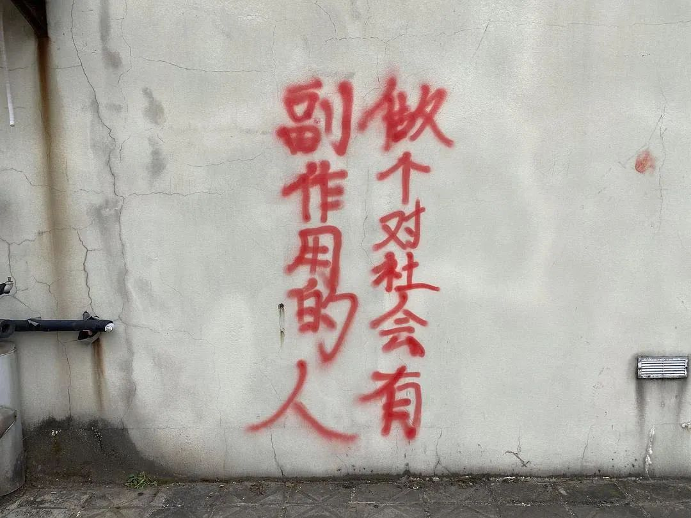
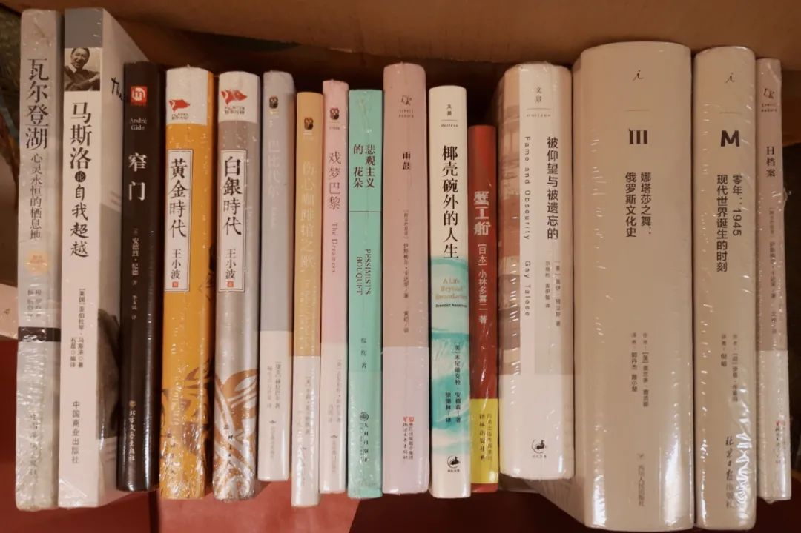
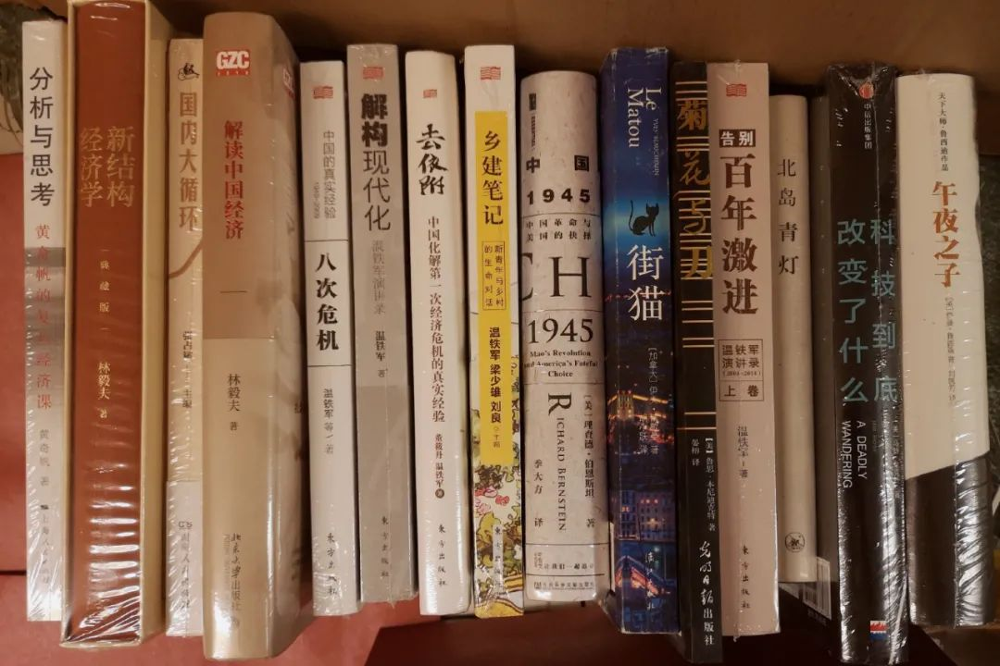

视线远处的炼油厂泛出不同颜色，星星点点不知道是什么心情在重复天气。烟囱漫出了未完全燃烧颗粒，給云层蒙上黑色的幔纱。不到一个小时前，乌云压境着非凡的自然风雨。我打开了隔壁的窗户和门，坐在那边吹风飘雨。会觉得热带对于气候实在是无计可施，只能变化一天之内的天气来强行给每一个自然日以强行注脚。如果看到一个人终日忙碌，我会认为Ta其实不知道自己所忙为何。但如果见到一个人无所事事，往往我又觉得这个人另有所图。就像我这两天在看卡夫卡写的《城堡》，看到一半想起来还有作业没有写。于是放下书去写作业，写完了再来继续看。为什么要开盲盒呢？心理学家做了一些简短的分析。提出的那些理论我看不太懂。其实看得懂，但是复述不出来。不过我简短地对比了一下进而在考公方向上拥挤进去的一大批人。不否认群体会因为导向或者各种原因而分化出不同的职业追求。我在想的是开盲盒的人与有志/有倾向于考公的人，是不是同一拨人？如果没有重合，那比较符合朴素预期。但如果这两拨人重合度还不小，那会引出更深刻的议题，因为更反朴素的常但是又好像可以好好解释。没有数据，我就不继续往下写了。最近每天的日推，平均有三分之一的歌要被我扔进屏蔽里边。醒来之后veteran给我推了一个豆瓣的小组：WRO World Romance Organization世界浪漫组织合作导师问我：“你想杀兔子还是杀老鼠？我比较建议杀兔子不仅是因为大一点，而且老鼠的话总是有些不太科学的小把戏。”想起前几天和朋友说有些内部笑话。和师兄说起为什么会要走上科研这条路，问我：“你觉得你走上科研路，和你的老师有多大关联？”我想了想表面上看起来好像是一步一步走到现在这个样子了，因为好像还能读下去而又有继续读书的需要并且不算太糟的选择。但如果把走上科研道路当成因变量来看的话，实际上这个函数是不显含参的，不显含的参量就是老师的影响。人们都更倾向于把其他人引上自己的路，一方面来以此证明自己的路是不错的还有人来跟着进坑，另一方面自己知道得更细节的也是如何成为自己。所以在这里面，老师是一个不显含的参量，但是很重要。能看懂不显含，即不明显含有而且理解是什么意思。感觉我的读者里有超过百分之七十以上的人会觉得这个词，就和包含、互斥、相交这些词汇差不多熟悉。但这仍然属于内部笑话。我最近就越来越怕和人聊天的时候，只剩下了怎么帮人改文书看简历踩时间点。可如果只是帮别人想办法从事着和我类似的主要时间占据，我会认为这只利用了大概很少的部分。最多的时候，我好像同时有不下十五个各种软件的大小号。去不同地方的原因，还是想知道和自己不一样的人在关心什么、为什么烦恼又因为什么而开心。年龄学历常住地，如果只是想这些找到相似的人，还不如不直接走出寝室随便和路上碰到的人搭话、下楼吃个早餐店里全是和你一个地方的。日落在傍晚暴雨过后的，天边云层还紧密堆积着。船坞亮起了桅杆灯，炼油厂点燃了厂牌。余晖想穿透云层但是做不到，只能攀缘在乌云的旁边，勾勒出一抹远近深浅的轮廓。夕阳，在云层间呼吸。如果一定要取名的话，或许这就叫『伦勃朗的鼻炎』鼻炎应该是一个在哪都很普遍的词汇。至于什么是伦勃朗光，或许我的读者里有摄影等等视觉爱好的人可能可以说出、并且马上能想到一些场景。不知道比例占多少，但是应该没有过半吧。这也算是一个内部笑话了。最无聊的活动就是解释笑点。之前Prof. blueFISHer描述自己的照片时说：“我被岁月滤除了高频分量。”意为被岁月磨平了轮廓，因为在信号与系统里，高频分量组成了有棱有角的部分。为什么这句就有笑点解释呢？大概因为我不是电气系的。所以我不懂，也不知道有多少人懂。正主在读者列表里，不知道会不会看到这句话。内部笑话可以好好地和用户粘性关联起来。像三联的读者对于北京交通大学做题家的反馈，科研人在“饶议科学”公众号对于饶毅打假的反馈。反倒不觉得生气的人有多么不好，生气的人最可以看出别人有几斤几两，一不小心就露底了用来压下怒火的方法也就这么一点点。
周末几乎一直在寝室里读书，因为新运过来的书真的有香味。像小时候去定王台闻到的那种油印香味。所以我根本不想出去，本来没多大的房间里放了六十七本书，翻开书的香味可以持续很久很久。

